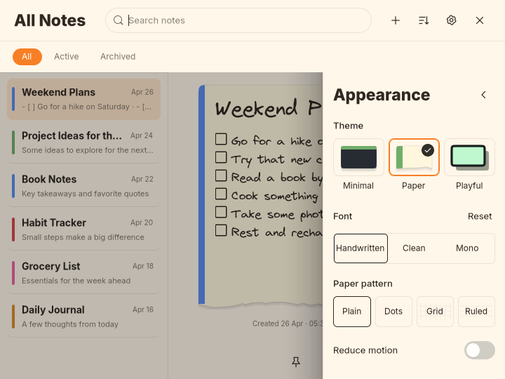
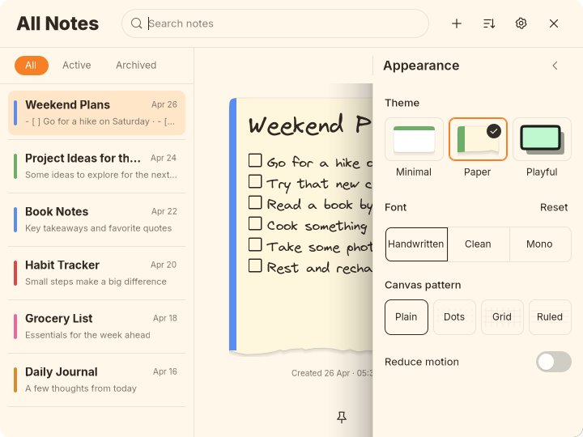
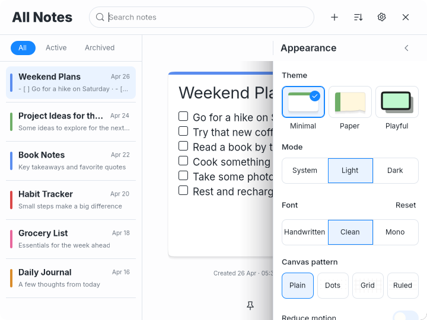

Latest requested correction: one animated Appearance panel, removed back arrow and dimmed filters. Earlier captures remain below.
Corners, spacing, Appearance and canvas patterns
Requested consistency and canvas-pattern fixes, under visual review. Minimal Dark remains under review. No commit or push.
Actual GTK captures with disposable notes. Changes cover corners, row and paragraph spacing, Appearance header placement, and existing canvas pattern controls. Theme colors, fonts, shadows, Paper tear and Playful outline remain distinct.
| Measurement | All themes now |
|---|
| Main header content height | 58px, plus 1px divider |
| Filter band / pill | 44px / 24px |
| Filter padding / first-row gap | 10px above/below / 8px |
| Row content / divider gap | 55px / 5px |
| Paragraph spacing | 1px above / 3px below |
| Control / grouped outer corners | 8px, with connected segment interiors |
| Note corner radius | 18px; Paper tear and Playful waves retained |
Appearance on the filter row

Before, Appearance sits below the filter row
After, Appearance aligns with All / Active / Archived and the drawer edgeThe heading and Close are outside the scrolling drawer body. GTK checks its 260px width and alignment at both 720×540 and 680×460.
Paper
Paper, matching compact main geometryPaper, Appearance aligned with filters Paper: before/after, patterns, minimum sizes, long titles and tools
Playful
Playful: before/after, patterns, minimum sizes, long titles and tools
Minimal Light
Minimal Light, matching compact main geometry
Minimal Light, Appearance aligned with filters Minimal Light: before/after, patterns, minimum sizes, long titles and tools
Minimal Dark
Minimal Dark: before/after, patterns, minimum sizes, long titles and tools
Pattern controls now affect both canvases
Minimal no longer skips patterns. All themes render Plain, Dots, Grid and Ruled, with readable light pattern ink in Dark and clearer dark ink in light themes. Global Settings changes update notes following Default pattern. Existing per-note overrides remain intact and persist.
Typography retained
| Theme | Small/Medium/Large titles | Small/Medium/Large bodies |
|---|
| Paper / Playful | 27 / 30 / 33px | 14 / 17 / 20px |
| Minimal Light / Dark | 25 / 28 / 31px | 14 / 17 / 20px |
Regular 400 and Bold 700. Inter remains Minimal's default; Virgil remains Paper/Playful's default. Global fonts remain Virgil, Inter and JetBrains Mono. Their natural font metrics still differ.
Original references: Paper · Playful · Minimal layout · Dark note.
Verification
Formatting, 22 tests, strict Clippy, release build, diff checks and the GTK shared-editor regression pass. Exact GTK dimensions, geometry, heading placement, actual pattern changes in both views, global persistence and per-note override persistence pass. No GTK warnings/errors in the final run. Native pointer/Escape/timer checks were not repeated.
All fixes are under visual review. Theme palettes and note silhouettes remain distinct. Original references and historical previews are preserved. No commit or push.